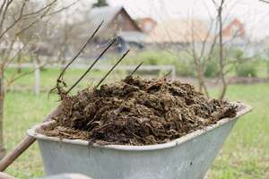

ⲙⲉϩⲣⲟ S, ⲙⲁϩ. B nn m, manure: Lu 13 8 SB κόπρια (pl); Va 57 268 B ⲡⲓⲕⲟⲡⲣⲟⲥ ⲉⲧⲉⲡⲓⲙ. ⲡⲉ, K 395 B ⲡⲓⲙ. تفليح, زراءة; BMOr 8811 209 S devil planted thee (f) ⲡⲉⲛⲧⲁϥϯ ⲙ. ⲛⲉ, C 89 105 B ϯ ⲙⲱⲟⲩ & ϯ ⲙ. تزبل, Miss 8 222 S seed watered ⲛⲥⲉϯ ⲙ. ⲛⲁϥ, BMar 36 S sim ⲛⲧⲉϥⲥⲱϣⲉ. ⲣⲉϥϯ ⲙ. S, one who manures: P 44 80 = 43 54 ⲛⲓⲣ. عزاقين.
(noun masculine)
anatomy
manure [κοπρια]

complete
211b
See also:
| view | ϩⲟ(ⲉ)ⲓⲣⲉ, ϩⲟ(ⲉ)ⲓⲗⲉ S ϩⲁⲓⲣⲉ Sf (ϩ)ⲁⲓⲣⲉ A ϩⲱⲓⲣⲓ B | (noun feminine) dung human or animal [κοπρος]2242 |
| view | ϩⲁⲥ S ϩⲟⲥ B ϩⲉⲥ F | (noun masculine) dung (of animals, birds), in recipes934 |
| view | ⲥⲟⲧ, ⲥⲟⲟⲧ S ⲥⲁⲧ SB plural: ⲥⲁⲁⲧⲉ S | (noun masculine) dung, excrement [κοπρος]1489 |
| view | ϩⲁⲗⲙⲓ B | (noun masculine) dung, slime [βολβιλον κοπρου]2165 |
| view | ⲙⲏ SBF ⲙⲓ S | (noun feminine) urine [ουρον]1037 |